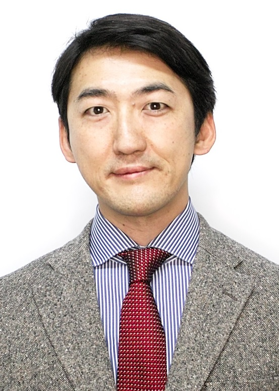

Yohsuke Tanaka
Associate ProfessorDepartment of Mechanical and System Engineering
Kyoto Institute of Technology
Office: 10-501D
Phone/Fax:+81-75-724-7355
E-mail: E-mail:tyohsuke kit.ac.jp
kit.ac.jp
Address: Matsugasaki, Sakyo-ku, Kyoto 606-8585, Japan
researchmap
ORCID
Google Scholar Citations